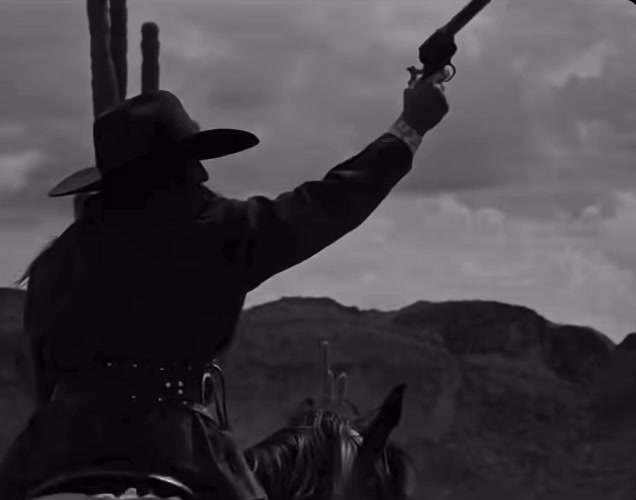
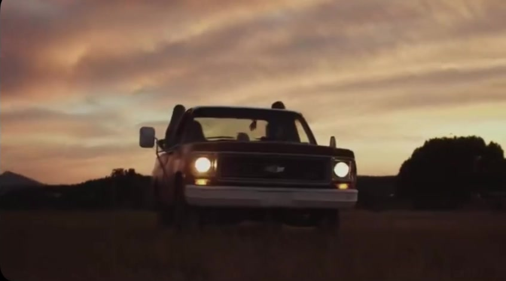
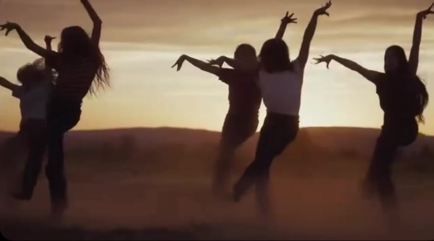
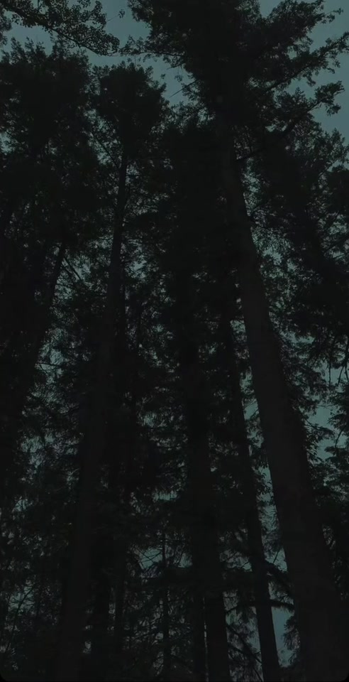
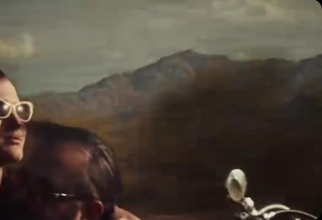
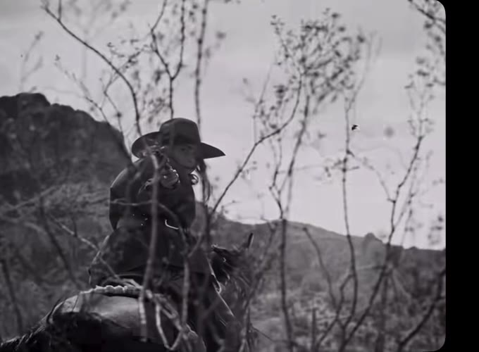
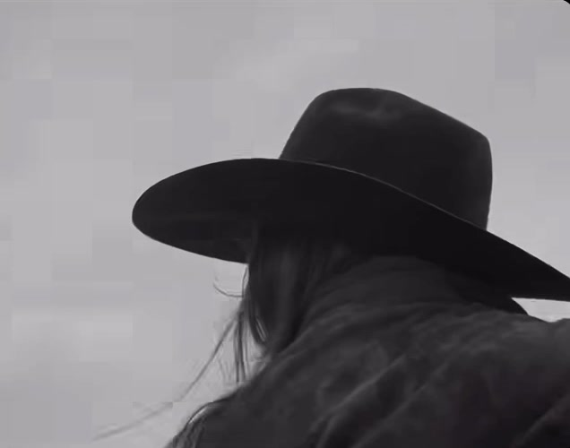
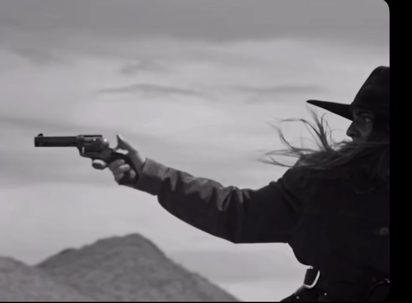
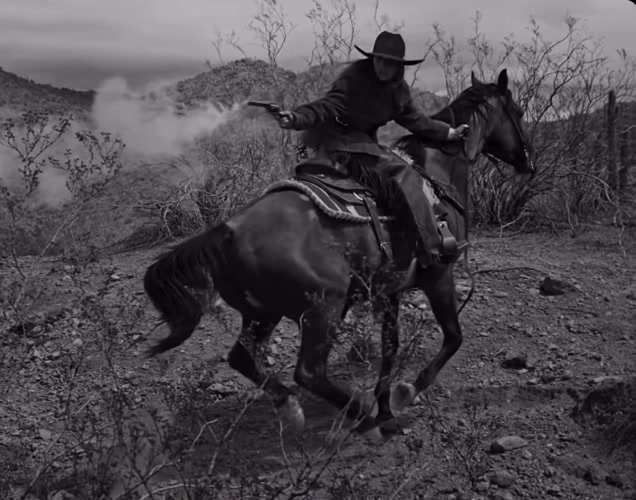
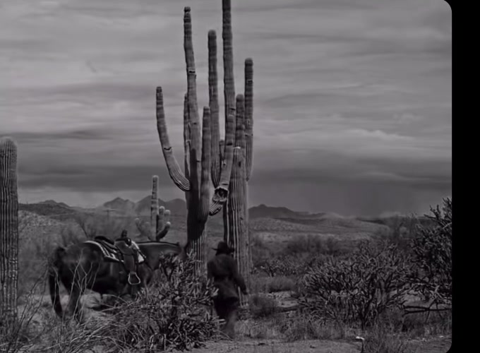

JP Silva

Filmmaker · Producer · Photographer
Austin, Texas30.2672° N, 97.7431° W
Selected plates







About JP

The work begins before the camera is up: in the van, at soundcheck, in the quiet hour before doors. JP shoots for the feeling of a room rather than its proof, whether that room is a stage, a set, or a field at dusk. What stays is honest, and usually a little raw.
Film

- 01

- 02

- 03

- 04


Index
- 01Western, Black & WhiteMusic Video
- 02The pickupField at Dusk · Music Video
- 03The dancersField at Dusk · Music Video
- 04Forest, RainShort · Personal
- 05The fur hatFrom the showreel · 2025
- 06Desert HighwayMusic Video
- 07Prints on the wallGroup exhibition · 2025
- MMoving plateWestern · contact sheet
- RThe reel47 seconds · muted
Commissions
Film, stills, the road. Austin.
Instagram@jp.media
Enabled at launch